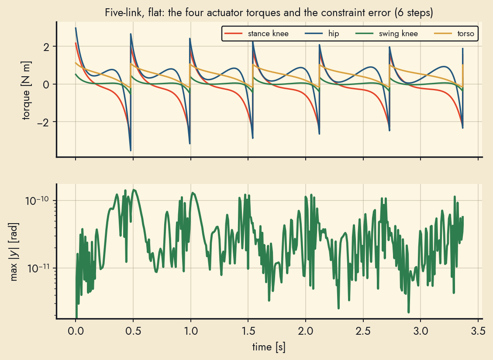
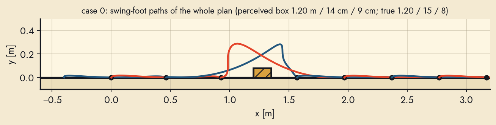
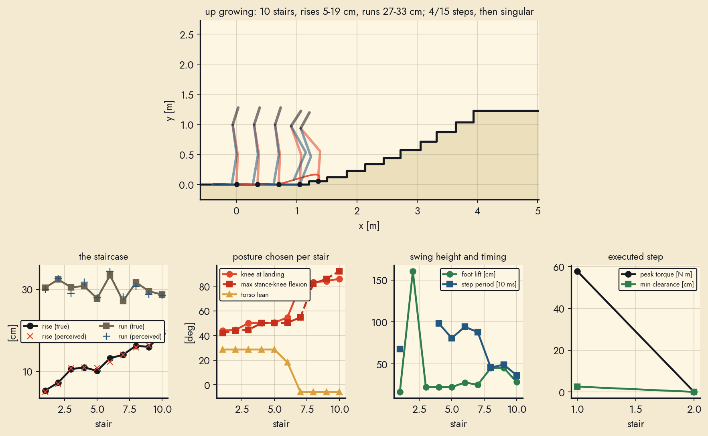
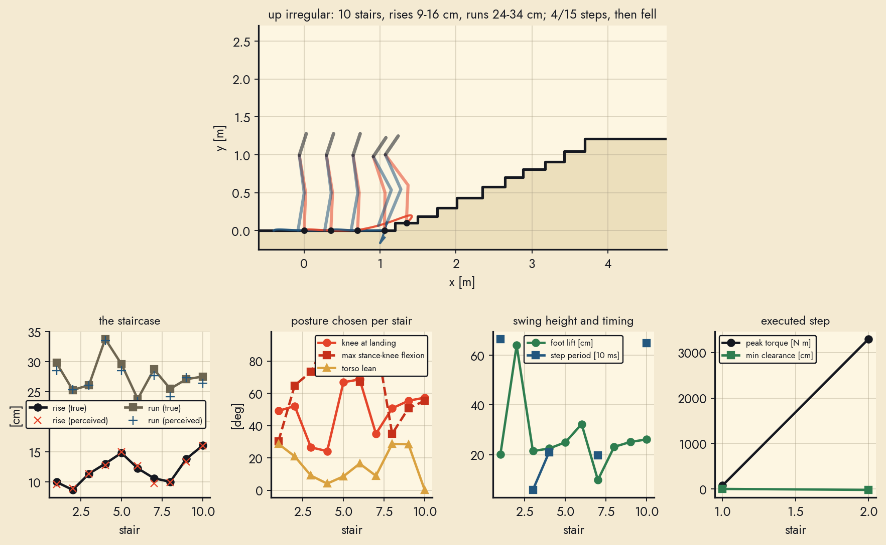
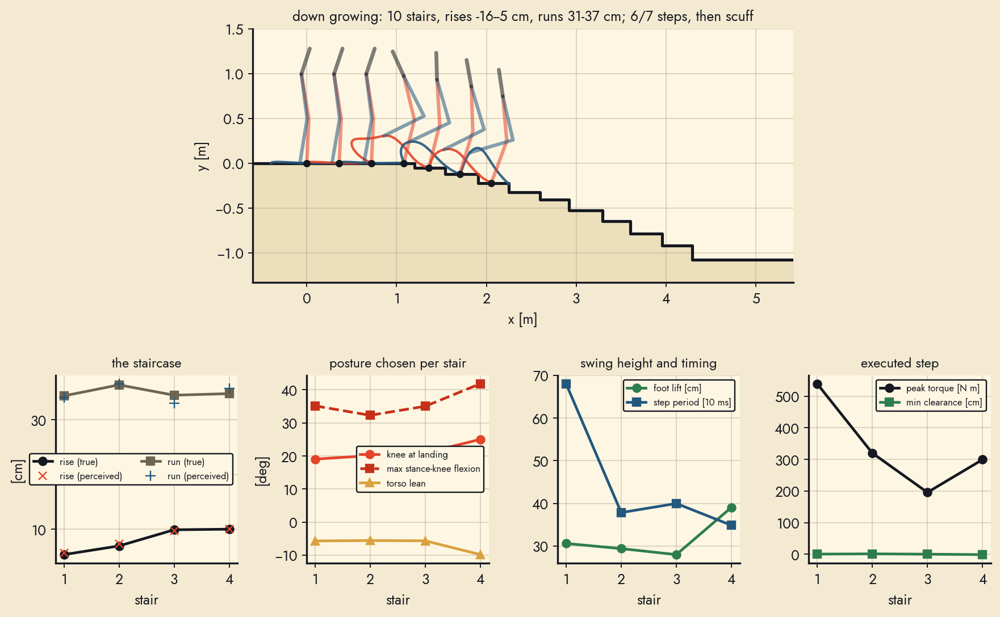
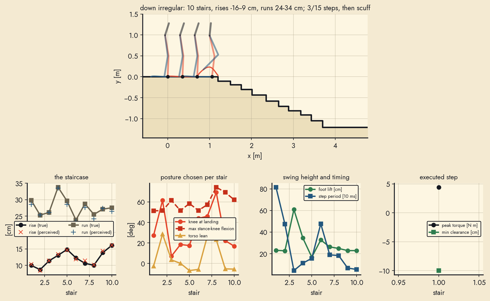
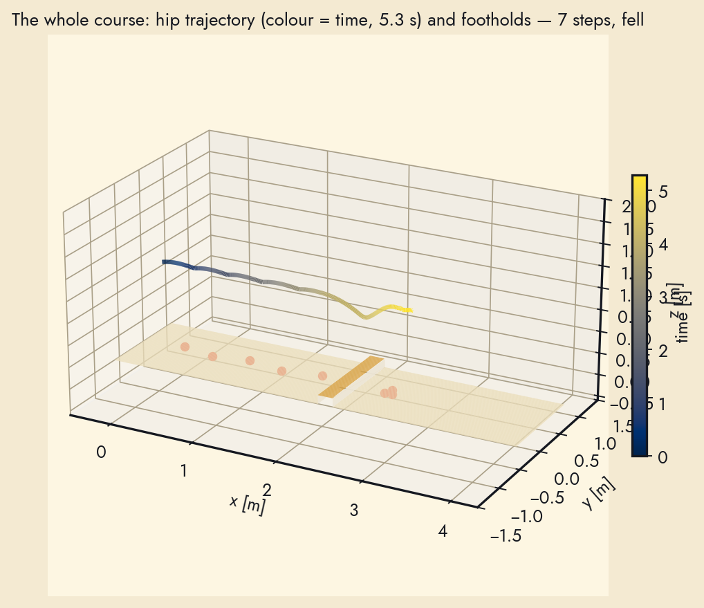
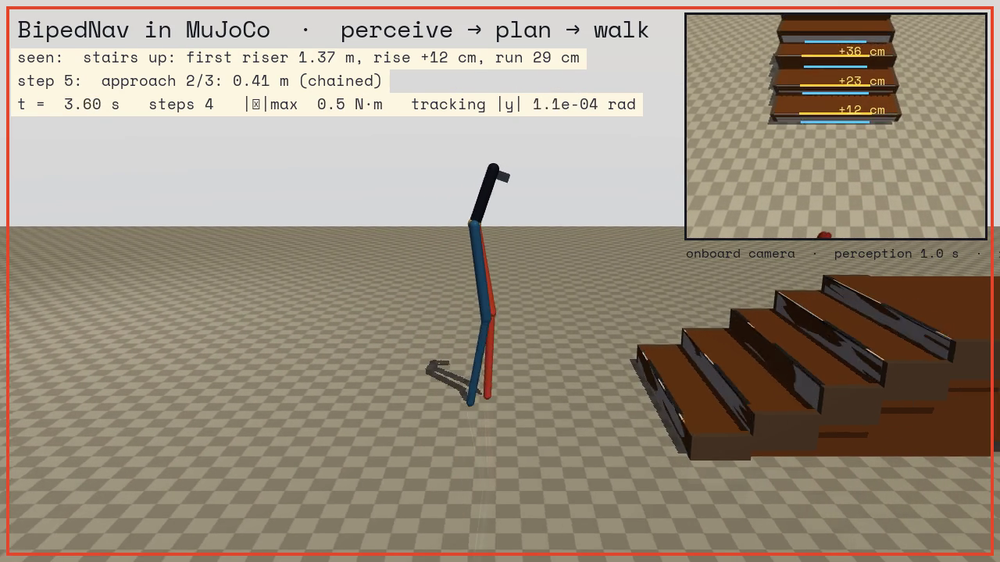
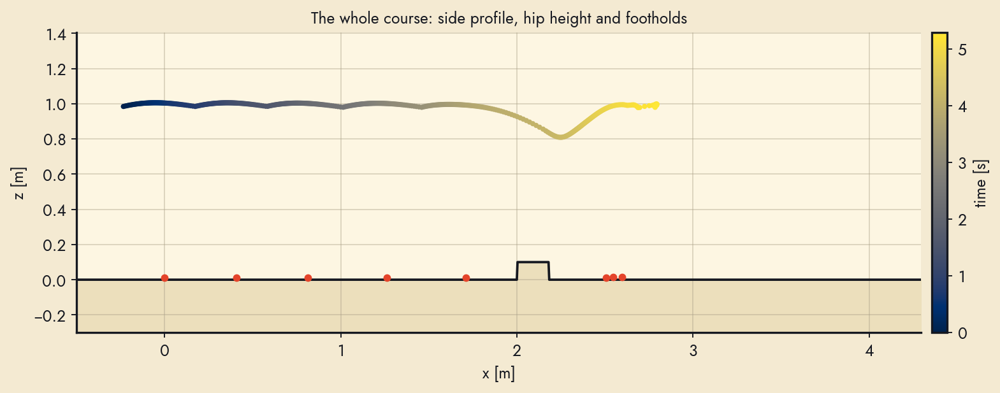

Perception ◆ Nonlinear control ◆ University of Toronto, 2024 → re-tested 2026
BipedNav
Stairs and obstacles, seen once, then walked. A monocular network turns one photo into stair rise and run, or an obstacle's distance, depth and height; a five-link biped with knees turns that geometry into virtual-holonomic-constraint gaits that are hybrid limit cycles, pre-plans its steps and walks over the obstacle. Everything below was re-run from the archived code and data, and the parts that broke are reported as found.
Demonstration (1 min 20 s): the perception layer on a real staircase, the walker on flat ground, down a slope, up a 5° staircase and down a 10° staircase with treads and risers, and the geometric reason a knee-less biped cannot take steeper stairs.
mean over 5 scenes, RealSense cloud (2.1 cm monocular); poster: 2.9 cm
91%
tread run accuracy
2.5 cm mean error, both clouds; poster: 81 %
4e-5
reproduction
max difference to the report's six VHC coefficients
0.78
Floquet multiplier
five-link flat gait; measured return-map slope matches the analytic δ²/M⁻, in the analytic simulation and in MuJoCo
7/10
stair flights in physics
footed biped in MuJoCo, every stair different (5–12 cm drops); 5 of 6 crates crossed
3/5
boxes stepped over
5, 8 and 22 cm crates crossed end to end at 50 kg with 400 N·m motors; the 12 and 15 cm cases trip at the trailing step
0.09s
per scene
stair geometry on a laptop CPU, no GPU after the depth network
In one strip
1 · Perceive
One image → rise and run
Metric depth from a fine-tuned Metric3D v2, surface normals, two predominant normal directions (treads, risers), plane offsets clustered into a lattice. This scene: rise 14.2 cm, run 28.1 cm (tape: 12.0 / 29.6).
2 · Design
A curve in joint space is the gait
Virtual holonomic constraints tie the actuated joints to the stance-leg angle; hybrid invariance through the impact map, transversality and a virtual mass/potential test decide whether a stable limit cycle exists. Shown: the two-link curve; the five-link walker uses four Bézier curves.
3 · Walk
A five-link biped with knees walks it
Hybrid limit cycles for a RABBIT-style walker, verified against its return map. From one view of an obstacle the planner schedules the approach and two step-over gaits chained through the impact map, and the robot clears the box in collision-checked simulation.
Perception layer
Depth sensors on walking robots and exoskeletons are bulky; the 2024 study asked whether one RGB camera can recover the geometry that matters for a stair, its rise and run. Metric3D v2 was fine-tuned on a new dataset of 16,780 RGB-D images of indoor and outdoor stairs (Intel RealSense D415/D435, head-mounted), the metric depth was back-projected with the camera intrinsics, and planes were extracted from the point cloud.
The archived sample set has five scenes with the RGB image, the RealSense depth, the network's point cloud and normal map, and tape measurements of two steps per staircase. The re-implemented extractor works from surface normals instead of iterative RANSAC, which on these clouds fragments the grazing treads and fits planes across the nosing:
Normals from the organised depth grid (3-px baseline, jumps over 6 cm rejected), oriented toward the camera.
Predominant normals: a 4° spherical histogram; the most populated up-pointing mode is the tread normal, the walking direction is the optical axis on the tread plane, refined by a riser mode if one lies within 30° of it (side walls, whose normals are lateral, are rejected).
Offset clustering: tread points projected on the up axis and riser points on the forward axis form 1-D lattices whose spacings are rise and run; a least-squares lattice fit tolerates missing steps.
Deterministic, 0.09 s per scene from the RealSense cloud (0.32 s from the ASCII monocular cloud, dominated by parsing).
From the poster. Depth-estimated point cloud → planar features → predominant normal → plane extraction → rise and run.Experimental design. A head-mounted camera looking down the staircase; the quantities to recover are the shortest distance to the next step, its height and its depth.
The five archived scenes (8 June 2024, two buildings), one per row. Blue = tread points, red = riser points; dashed lines are the fitted lattices. Full-resolution panel in the report.
scene
tape h
D435 h
mono h
tape b
D435 b
mono b
WE 17:51
14.2
16.5
10.7
27.1
19.3
25.9
WE 18:27
19.5
19.6
19.9
25.3
25.1
23.3
WI 17:41
12.0
15.1
15.5
29.6
31.2
33.5
WI 17:47
12.0
14.2
12.0
29.6
28.1
28.3
WI 18:12
15.0
15.7
18.0
32.1
33.3
27.7
MAE [cm]
1.7
2.1
2.5
2.5
All in cm. The tape values average the two measured steps. Largest misses: the WE 17:51 scene (camera pitched only 47°, risers nearly edge-on) and a worn concrete stair whose nosing strip reads 3 cm high on both clouds.
Pipeline vs tape. The monocular cloud is metrically consistent with the RealSense cloud on every scene, which is what the study set out to show.
Poster. A. Qiu, A. Narayanan, Q. Cheng, B. Laschowski — Neural Robotics Lab, KITE Toronto Rehabilitation Institute, University of Toronto, 2024. Click to open the PDF.
Dataset & data products
Training set: 16,780 RGB-D stair images, indoor and outdoor, varied lighting, RealSense D415 and D435.
Archived samples: 5 scenes × {RGB 640×480, RealSense depth (mm PNG), RealSense point cloud (binary PLY, 307,200 pts), monocular point cloud (ASCII PLY), monocular normal map (3×480×640 tensor)} + measurements.csv. The monocular depth tensors are empty files in the archive; the point clouds derived from them are intact.
Tools in the repo: rosbag → RGB-D subsequence extractor with a frame-range GUI (data_scripts/process.py), depth → PLY back-projection, rosbag point-cloud extractor with Open3D filtering, a RealSense ROS workspace and an RViz distance-measuring plugin used for the tape-measure protocol.
Recording rigs from the poster: a lower-limb exoskeleton with leg-mounted cameras and the head-mounted RealSense used for the stair scenes.
Try it: one photo → stair or obstacle geometry
Runs entirely in your browser: a 27 MB Depth Anything V2 network estimates depth, the BipedNav pipeline finds the treads and risers (or the floor and the first obstacle), and prints rise/run or distance/depth/height. Nothing is uploaded.
Drop a staircase or obstacle photo here
or click to choose one · phone photos work best when taken from standing height, looking down at the steps
Stock scenes from the archived dataset (tape measurements known; camera height set automatically):
loading…
photo
monocular depth (metric)
treads · risers / floor · obstacle
side profile + fitted lattice
How the scale is recovered: the network's output is inverse depth up to an affine map, so the pipeline searches the shift that makes the dominant up-facing surface planar and sets the scale so that surface lies at the camera height you enter. The stock scenes use the camera height measured by the depth camera; for your own photo, enter roughly the height of your phone above the floor (1.4–1.7 m when standing). The metric fine-tuned Metric3D v2 of the original study is more accurate than this browser-sized model; the geometry pipeline is the same.
Locomotion layer: a five-link biped with knees
The walker is the five-link biped of the course's first assignment, the structure of the RABBIT robot: two legs with knees, a torso, point masses at the joints, point feet, four actuators (both knees, the hip, the torso) and an unactuated pivot at the stance foot. Shank and thigh are 0.5 m each, the torso 0.3 m. The robot is scaled to a realistic 50 kg (13 kg at each knee, 8 kg at the hip, 13 kg of torso, 1.3 kg feet) and driven by actuators rated at 400 N·m continuous, the bound every periodic gait is designed to, with an 800 N·m peak for the transients of a few tens of milliseconds at the switch between gaits (the simulator's motors saturate there).
Virtual holonomic constraints. The four actuated joints are tied to the stance-shank angle θ by Bézier polynomials qk = φk(θ) and enforced by input–output feedback linearisation. The end coefficients encode the touchdown posture, its mirror image after the leg swap, and hybrid invariance (the post-impact velocity is tangent to the constraint); the interior coefficients, the touchdown tangents and the posture (stance-knee flexion, swing-knee flexion, torso lean) are optimised under transversality, existence and stability of the hybrid orbit, no knee hyper-extension, torso and hip bounds, and swing-foot clearance over the terrain.
ζk+1 = (δ²/M⁻) ζk − V⁻ same return map as the two-link walker, now with knees to lift the foot
Verified, not assumed. The closed-form dynamics match a symbolic derivation to 4·10⁻¹⁵, the impact map conserves angular momentum about the new stance foot to 10⁻¹⁵, and the leg-swap relabelling reproduces every physical point (the archived assignment code had a stray torso term in the new stance-knee angle, caught by that check). On flat ground the 0.40 m gait is a stable hybrid limit cycle with Floquet multiplier 0.79, and the return-map slope measured in simulation matches it.
RABBIT structure4 actuators, 1 passive pivotBézier VHCschained through the impact mapcollision-checked terrain
The constraint set on flat ground (stride 0.40 m) with the swing-foot path.Return map measured over 16 steps from three initial speeds against the analytic affine map.
Flat ground, 0.40 m stride
Ten steps from 1.25× the limit-cycle speed. Period 0.78 s at the fixed point, 0.51 m/s, peak actuator torque 2.0 N·m for the 1.9 kg robot, designed with a 30 % energy margin over its barrier; the energy plot shows the orbit settling onto the fixed point.
Perceive → plan → step over a box
The planner reads the obstacle from one view (1.20 m ahead, 15 cm deep, 8 cm high), schedules the approach, a step over the box with the leading leg, brings the trailing leg over and resumes the 0.40 m gait. Every step, no collision; the five cases are in the table below.
Energy levels and the hybrid orbit, 16 steps from 1.3× the limit-cycle speed; dotted segments are the impact map.

Four torques and the constraint error over six steps; the stance knee carries the impact, the hip drives the swing.
Obstacles: perceive, pre-plan, walk over
From one view of the floor ahead, the perception layer returns the first obstacle in the walking corridor: its distance, depth and height (floor plane from the up-facing normal mode, points above it clustered along the walk, top surface for the depth). On synthetic RGB-D scenes with a 45° head camera the distance is recovered to 1 cm, the height to 1 cm and the depth to 2 cm out to about 2 m; beyond that the box holds too few pixels.
Pre-planning from the current pose. The walker is offered boxes of 5 to 22 cm height and 10 to 30 cm depth. It takes off 25 cm before the box and lands 15 to 23 cm past it, so the leading step is a + d + b; the approach is split into equal regular steps between 0.28 and 0.55 m and a regular VHC gait is designed for that stride. The leading and trailing step-over gaits are then designed in sequence, each chained to the previous impact: the leading step starts where the approach gait's impact leaves the robot and must hand a usable impact gain to the next step; the trailing step starts where the leading step's impact leaves it and ends exactly in the nominal gait (or, if that is infeasible, lands freely and a recovery step ends in it). Every transition is hybrid-invariant by construction; the incoming phase velocity is propagated through the zero dynamics and every step must keep an energy margin over its barrier, a feed-forward torque under 400 N·m (the 50 kg robot's continuous rating) and 3 cm of clearance over the perceived box inflated by the perception uncertainty (2 cm in front, 3 cm behind, 2 cm up). At this mass three of the five boxes are crossed end to end; the 12 and 15 cm boxes need a recovery step whose torque exceeds the motors, and the walker trips at the trailing step.
The plan is then executed against the true box, so the perception error is part of the test. One bug decided the outcome of the taller boxes: when a step chains from a step that was itself chained, its hand-over tangent has to use the executed step's phase span, not the periodic one; with the wrong span the post-impact velocity was not tangent to the next constraint and the controller's correction transient tripped the trailing leg. With the correct span, all five perceived boxes are crossed.
Case 0, the two step-over gaits. Leading leg over the box (left), trailing leg over it and back into the regular gait (right).

The whole plan: swing-foot paths in world coordinates, alternating colours per step.
case
true box (dist / depth / height)
perceived
plan
result
peak torque
0
1.20 m / 15 cm / 8 cm
1.20 m / 14 cm / 9 cm
2 × 0.46 m, then 0.63 m over, resume 0.40 m
8/8 steps, no collision
432 N·m
1
1.60 m / 20 cm / 15 cm
1.59 m / 18 cm / 16 cm
3 × 0.44 m, then 0.71 m over, resume 0.40 m
5/9 steps, then trip
800 N·m
2
2.00 m / 25 cm / 22 cm
1.99 m / 23 cm / 23 cm
4 × 0.43 m, then 0.76 m over, resume 0.40 m
10/10 steps, no collision
419 N·m
3
1.00 m / 30 cm / 12 cm
1.00 m / 28 cm / 13 cm
2 × 0.37 m, then 0.78 m over, resume 0.40 m
2/8 steps, then trip
426 N·m
4
1.40 m / 10 cm / 5 cm
1.40 m / 9 cm / 6 cm
3 × 0.38 m, then 0.54 m over, resume 0.40 m
9/9 steps, no collision
415 N·m
Case 0: 8 cm box, 1.2 m ahead
2 approach steps of 0.46 m, 0.63 m over with the leading leg, trailing leg over, regular gait resumed — 8/8 steps, no collision.
Case 1: 15 cm box, 1.6 m ahead
3 approach steps of 0.44 m, 0.71 m over with the leading leg, trailing leg over, regular gait resumed — 5/9 steps, then trip.
Case 2: 22 cm box, 2.0 m ahead
4 approach steps of 0.43 m, 0.76 m over with the leading leg, trailing leg over, regular gait resumed — 10/10 steps, no collision.
Case 3: 12 cm box, 1.0 m ahead
2 approach steps of 0.37 m, 0.78 m over with the leading leg, trailing leg over, regular gait resumed — 2/8 steps, then trip.
Case 4: 5 cm box, 1.4 m ahead
3 approach steps of 0.38 m, 0.54 m over with the leading leg, trailing leg over, regular gait resumed — 9/9 steps, no collision.
Stairs: the gait adapts to every riser
The five-link biped climbs and descends staircases whose rise and run change from one stair to the next. The perception layer hands the planner the next riser's height and the tread's run; the planner looks the gait up in a library of periodic stair gaits designed on a grid of (run, rise) for both directions, interpolates the VHC parameters (touchdown posture, tangents, Bézier interior) to the exact geometry, chains the step to the one being executed through the impact map, and re-designs it as a transition step only when the analytic checks (regularity, clearance, energy along the step, torque) fail.
What changes with the geometry. Steeper risers are met with a more flexed landing knee, a stronger torso lean and a higher swing-foot lift; descending gaits are faster and land with a straighter knee. The library maps show the whole picture; the clips below are library gaits walking uniform staircases of eight different geometries, each for eight collision-checked steps.
Why it works now. Two changes made climbing gaits appear where a 72-start search had found none: the phase variable is the virtual stance-leg angle (so the constraint stays regular while the stance knee extends under load), and the landing knee is allowed to flex deeply, which is how the virtual potential can fall over an upward step (V⁻ < 0) while the impact pays it back.
library of periodic gaitsper-stair interpolationchained through the impacttransition re-designexecuted against the true stairs
Walking up. Knee flexion at landing, torso lean, foot lift, step period, Floquet multiplier and peak torque over the (run, rise) grid.Walking down. The same maps for descending gaits.
Staircases where every stair differs. Ten flights (five up, five down) with per-stair rise and run drawn around gentle, perceived, steep, growing and irregular profiles, the planner seeing noisy geometry and the walker executing the true stairs in the collision-checked hybrid simulation, one step at a time. With the transition library, four of the five ascending flights walk end to end (7 to 19 cm rises, including the flight whose rise grows from 5 to 19 cm); the steep flight has no verified entry for a 19 cm first stair on a 26 cm run. The descending flights walk five to nine stairs at the library's fast fixed point (0.33 s per stair) before a sparse cell of the descending library clips a nosing or the exit step fails: with point feet a descent is a controlled fall, and braking it back into the regular gait within 400 N·m takes more than one step. The table lists every run as it happened.
run
stairs
rise range
run range
gaits
result
peak torque
up gentle
8
6–8 cm
32–34 cm
7 chained / 0 re-designed / 1 infeasible
all 14 steps
624 N·m
up perceived
8
10–14 cm
27–29 cm
7 chained / 0 re-designed / 1 infeasible
all 14 steps
614 N·m
up steep
8
14–19 cm
24–31 cm
0 chained / 0 re-designed / 1 infeasible
3/4 steps, then trip
429 N·m
up growing
10
5–19 cm
27–33 cm
7 chained / 1 re-designed / 2 infeasible
all 16 steps
800 N·m
up irregular
10
9–16 cm
24–34 cm
6 chained / 1 re-designed / 3 infeasible
all 16 steps
627 N·m
down gentle
8
6–8 cm
33–35 cm
2 chained / 0 re-designed / 1 infeasible
5/6 steps, then scuff
401 N·m
down perceived
8
9–13 cm
32–34 cm
3 chained / 0 re-designed / 3 infeasible
8/9 steps, then scuff
800 N·m
down steep
8
12–17 cm
30–37 cm
3 chained / 0 re-designed / 4 infeasible
9/10 steps, then fell
800 N·m
down growing
10
5–16 cm
31–37 cm
4 chained / 0 re-designed
6/7 steps, then scuff
539 N·m
down irregular
10
8–14 cm
30–36 cm
3 chained / 0 re-designed / 4 infeasible
9/10 steps, then singular
800 N·m
Up gentle: 8 stairs, rises 6–8 cm
Runs 32–34 cm, every stair different. Landing knee 40–47°, gaits 7 chained / 0 re-designed / 1 infeasible; all 14 steps, peak torque 624 N·m.
Up perceived: 8 stairs, rises 10–14 cm
Runs 27–29 cm, every stair different. Landing knee 41–57°, gaits 7 chained / 0 re-designed / 1 infeasible; all 14 steps, peak torque 614 N·m.
Up steep: 8 stairs, rises 14–19 cm
Runs 24–31 cm, every stair different. Landing knee 66–66°, gaits 0 chained / 0 re-designed / 1 infeasible; 3/4 steps, then trip, peak torque 429 N·m.
Up growing: 10 stairs, rises 5–19 cm
Runs 27–33 cm, every stair different. Landing knee 44–64°, gaits 7 chained / 1 re-designed / 2 infeasible; all 16 steps, peak torque 800 N·m.
Up irregular: 10 stairs, rises 9–16 cm
Runs 24–34 cm, every stair different. Landing knee 42–60°, gaits 6 chained / 1 re-designed / 3 infeasible; all 16 steps, peak torque 627 N·m.
Down gentle: 8 stairs, rises 6–8 cm
Runs 33–35 cm, every stair different. Landing knee 22–23°, gaits 2 chained / 0 re-designed / 1 infeasible; 5/6 steps, then scuff, peak torque 401 N·m.
Down perceived: 8 stairs, rises 9–13 cm
Runs 32–34 cm, every stair different. Landing knee 15–26°, gaits 3 chained / 0 re-designed / 3 infeasible; 8/9 steps, then scuff, peak torque 800 N·m.
Down steep: 8 stairs, rises 12–17 cm
Runs 30–37 cm, every stair different. Landing knee 22–27°, gaits 3 chained / 0 re-designed / 4 infeasible; 9/10 steps, then fell, peak torque 800 N·m.
Down growing: 10 stairs, rises 5–16 cm
Runs 31–37 cm, every stair different. Landing knee 19–25°, gaits 4 chained / 0 re-designed; 6/7 steps, then scuff, peak torque 539 N·m.
Down irregular: 10 stairs, rises 8–14 cm
Runs 30–36 cm, every stair different. Landing knee 22–26°, gaits 3 chained / 0 re-designed / 4 infeasible; 9/10 steps, then singular, peak torque 800 N·m.

Up growing: the staircase and the swing-foot paths (top), and per stair the true and perceived geometry, the posture chosen, the swing height and timing, and the executed torque and clearance (bottom).

Up irregular: the staircase and the swing-foot paths (top), and per stair the true and perceived geometry, the posture chosen, the swing height and timing, and the executed torque and clearance (bottom).

Down growing: the staircase and the swing-foot paths (top), and per stair the true and perceived geometry, the posture chosen, the swing height and timing, and the executed torque and clearance (bottom).

Down irregular: the staircase and the swing-foot paths (top), and per stair the true and perceived geometry, the posture chosen, the swing height and timing, and the executed torque and clearance (bottom).
End to end in MuJoCo: camera in, torques out
The whole pipeline runs closed-loop in a physics simulator. A planar five-link biped with the same masses and lengths walks in a 3D scene of textured staircases and crates; an onboard depth camera on the torso looks at the floor ahead and is read at 1 Hz; the perceived floor levels (treads, risers, box tops, drop edges) are kept in a world model; and at every touchdown the next step is decided from that model: regular gait, an adjusted approach, a stair step, or a step-over. The VHC controller produces the four motor torques at 1 kHz. Nothing here uses the analytic impact map: the contacts, impacts and slip are MuJoCo's. Ramps are handled too: a plane fitted to the up-facing points that belong to no level gives the slope, and a small library of slope gaits (±3°, ±6°, ±10°) is chained onto and off the ramp.
Transitions are designed offline, not improvised. Every change of family (flat → first stair, last tread → landing, flat → ramp, ramp → level) is a step in a transition library: a degree-8 Bézier designed from the regular gait's impact into the periodic gait's exact touchdown posture (or back), robust to ±15 % of the arrival speed, velocity-matched to the fixed point of the gait that follows, and verified by simulating the whole sequence regular → entry → three periodic steps → exit → regular before it is admitted. The optimiser that produces them runs a trust-region ladder (radius 0.2 → 0.4 → 0.8 → free) from the following gait's own curve; a plain SLSQP from a straight-line start diverges on almost every cell. Online, the planner chains the library step to the measured landing and accepts it when it is kinematically feasible and clears the energy barrier at the measured speed; a re-design happens only when that fails, and a periodic step is never replaced by a free-posture re-design (that would leave the family and break every step after it).
The experiments, honestly. Ten flights up and ten down with random rise, run and count (every stair different), five crates of different size and distance, and one combined course were run with the same decision loop. At the realistic 50 kg and 400 N·m the closed loop in physics is not there yet: flat walking is exact, the entry step onto a ramp executes, and one crate (10 cm high, 12 cm deep) is crossed end to end; every staircase run and the other crates fall at the first family transition, where the entry step's feed-forward torque spikes and MuJoCo's soft impact hands over a different velocity than the rigid model predicts. The same planner in the collision-checked analytic simulator completes four of the five ascending flights (7 to 19 cm rises, every stair different) and descends five to nine stairs of each descending flight before a nosing is clipped or the exit fails. The tables below list every run as it happened; the clips show a selection.
What the physics runs revealed (and what changed). The failures were traced with a replay harness that executes a verified analytic sequence in MuJoCo without perception or planning, and with a per-step comparison of the rigid impact map against the simulator's post-impact velocities. Three things the pinned-foot design model never forbade break in physics: the 50 kg stair gaits demanded a negative vertical ground force near touchdown (7 to 35 % of the step), so the stance foot unloaded and slid 33 cm; the crate's leading step landed its foot at 2.8 m/s and the descending gaits at 10 m/s, which a compliant contact cannot stop; and after the leading step the trailing foot rose at 0.01 m/s, so it never left the ground and the impact map (which assumes it does) was off by a factor of 2 to 17. The designer and the planner now enforce a loaded foot inside the friction cone (Fz ≥ 0.3 Mg, |Fx| ≤ 0.7 Fz), a sticking impact with a touchdown speed under 1.1 m/s and a trailing-foot lift-off of 0.15 m/s. Under these, periodic stair gaits redesign fine (0.9 s, 300 N·m) but no entry from level walking into them is feasible for a point-foot robot at this mass, and neither is a descent: the physics is telling us what the ankles are for. Reducing the mass to 20 kg changes nothing (the ratios are mass-invariant).
Seven-link biped with feet and actuated ankles. The same machinery has been extended to a seven-link walker: feet of 14 cm toe and 6 cm heel on ankle hinges, six actuators, flat-foot landing (three impulsive constraints), the stance ankle passive in the periodic flat gait so the centre of pressure sits under the ankle. The model is verified against a symbolic derivation (5·10⁻¹³), the leg swap is exact, the impact dissipates energy (ratio 0.977), and the flat gait designed under the contact constraints walks in MuJoCo with exact 0.40 m strides.
With the stance ankle every stair or crate step is a fully actuated trajectory. A step is a time-parametrised Bézier curve of all six joints between two landing states, tracked by computed torque: it starts at the previous step's nominal post-impact state (the measured difference is blended out over the first 30 % of the step, with the velocity part clipped because the simulator's velocities 8 ms after contact still carry impact transients), and ends in the landing state of the periodic footed gait of that stair's cell (run, rise), designed once per cell and cached. Constraints at 41 samples: motor torques, a loaded stance foot inside the friction cone, the centre of pressure inside the foot (−6 to +14 cm from the ankle), heel/ankle/toe clearance including a crossing test at every riser edge and the crate top, knee and torso limits; at the landing the impulse cone, the impulse moment inside the foot, a foot speed under 1.1 m/s and the trailing foot lifting off. Each step is designed in 5 to 90 s against the true geometry of that stair (run of the tread being left, rise being taken, height of the tread behind), so every stair of a flight can differ.
Four different stairs down (drops 6–9 cm, runs 29–31 cm): entry, three stair steps, exit, every landing within 5 mm of the design.
Crate 10 cm high, 20 cm deep: the leading foot lands 5 cm past the crate, the trailing step returns to the regular gait.
Crate 15 cm high, 20 cm deep: same two-step plan, centre of pressure inside the foot throughout.
The first complete staircase in physics: three 10 cm stairs, 11 of 11 steps, zero slip.
Climbing three 10 cm stairs: entry and three ascending steps land within 1 mm; the step off the top (designed at the torque and duration bounds) falls, honestly kept in.
Variable staircases in physics. Ten flights of 3 to 5 descending stairs with random rise (5–15 cm) and run (29–38 cm), every stair different, scripted approach from four regular steps: 7 of 10 flights walked end to end (entry, every stair, exit, regular gait), landing errors under 5 mm, foot slip 2 mm, peak torques on the stairs 155–250 N·m. The failures are the flights with 13–14 cm drops, where no step satisfying the torque, friction and centre-of-pressure constraints exists at 400 N·m: the design reports it infeasible before the robot moves. Crates: 5 of 6 sizes crossed (5–15 cm high, 15–30 cm deep); the 12 × 25 cm crate has no leading step with the centre of pressure inside the foot.
Hip path (coloured by time) and footholds of the ten descending flights in MuJoCo. Every stair of a flight is different; the failed flights are the ones with 13–14 cm drops.
flight
stairs
rise cm
run cm
result
τmax on stairs N·m
slip cm
landing err mm
down00
3
9–9
33–35
walked 11/11
154
0.2
5
down01
3
10–11
31–34
walked 11/11
249
0.2
5
down02
4
9–12
29–32
fell after 8 steps
800
20.4
168
down03
4
11–13
30–33
design infeasible
0
0.0
–
down04
4
6–9
29–31
walked 12/12
235
0.2
4
down05
5
11–14
29–34
design infeasible
0
0.0
–
down06
3
8–10
30–32
walked 11/11
173
0.2
4
down07
5
5–10
29–33
walked 13/13
195
0.2
5
down08
4
7–9
29–36
walked 12/12
204
0.2
1
down09
4
10–11
33–35
walked 12/12
158
0.2
3
The crate runs: the leading step lands 5 cm past the crate, the trailing step lands 40 cm further in the regular gait's posture.
crate
height cm
depth cm
result
τmax N·m
slip cm
landing err mm
crate00
5
20
walked 9/9
340
0.1
0.1
crate01
8
15
walked 9/9
417
0.1
0.1
crate02
10
20
walked 9/9
438
0.2
0.1
crate03
10
30
walked 9/9
339
0.1
0.1
crate04
12
25
design infeasible
0
0.0
–
crate05
15
20
walked 9/9
281
0.1
0.2
What broke in physics and what fixed it (each verified by an A/B run of the same flight). Designing the centre of pressure inside 80 % of the foot for margin made the steps slow (1.2 s) and torque-hungry, and they fell; the physical foot as the bound with steps pulled to 0.9× the cell's period (0.85 s, under 160 N·m) walked. Blending the measured post-impact velocity into the reference whipped the swing leg on the third stair (3.8 rad/s of impact transient); clipping it to 1 rad/s fixed that flight with no other change. A handover to the hybrid-zero-dynamics regular gait must arrive at 90 % of its speed or more (the basin was measured: 0.90 walks, 0.85 falls). The crate's leading step used to land 22 cm past the crate, leaving the centre of mass half a metre behind the new stance foot; landing 5 cm past it made the trailing step feasible. Edge clearance has to be a crossing test, not a band: a band flagged the landing toe two centimetres before the next riser.
Ascent. The point-foot robot could not climb in physics at all. The footed robot's ascending cells (10 and 12 cm rises on 30 cm treads) are feasible once the lift-off requirement is relaxed to 5 cm/s (a climbing step's rigid impact cannot also throw the trailing foot up) and the swing toe is kept short of the next riser; the entry from the regular gait and the three climbing steps execute in MuJoCo with exact landings, and the step off the top of the flight is the open piece: a fully actuated exit exists in the model only at the torque and duration bounds, because the climb leaves the robot at 0.47 m/s and a flat gait lands at twice that.
Perception in the loop with the footed robot. The same onboard depth camera, world model and decision-at-touchdown loop drive the seven-link walker; the difference is that the stair steps are now designed online against the perceived edge distance and rise (design time on the HUD and in the trace). Two runs, both walked to the end of the scene: on the three-stair flight the robot perceives the drop edges and rises from 1.5 m away, approaches with 0.35 m steps so that it stands 18 cm before the edge, takes the three perceived stairs (drops of 11.0, 9.0 and 12.0 cm, strides 0.32, 0.31 and 0.34 m, each designed in 20 to 320 s of wall time), exits and resumes the regular gait (34 steps in 30 s of simulation). On the combined course it perceives the crate, arrives with 0.34 m steps, takes the 0.50 m leading step and the trailing step, walks on, perceives the staircase, descends its three stairs and continues (50 steps in 45 s; one stair step peaked at 520 N·m, within the 800 N·m peak rating but above the 400 N·m continuous bound the designs use). The design time is real and reported: the simulation waits for it, so this is a planner that runs between steps, not a reflex.
Footed biped, perception in the loop, combined course: crate perceived and stepped over, staircase perceived and descended, onboard camera picture-in-picture, decisions on the HUD.
Footed biped, perception in the loop, staircase: three different perceived drops taken in one go, then the regular gait.
The combined course with perception in the loop: hip trajectory (colour = time) and footholds over the crate and down the staircase.
# online_b7on_course: seven-link (feet, actuated ankles) -> walking after 50 steps, 45.0 s simulated, 256 s of step design
[ 0.00 s step 0] perceive (67 ms): levels z+0cm x0.25-2.28, z+0cm x2.81-5.57
[ 0.82 s step 1] touchdown: step of 0.82 s, stride (+0.400, -0.001) m, slip 0.1 cm, peak torque 355 N·m, tracking 0.001 rad
[ 0.82 s step 1] decide: regular 0.40 m (flat ahead) [0.00 s]
[ 1.00 s step 1] perceive (32 ms): levels z+0cm x0.67-2.33, z+10cm x2.35-2.55, z+0cm x2.77-2.77 | obstacle: box 1.95 m ahead, 20 cm deep, 10 cm high
[ 1.67 s step 2] touchdown: step of 0.85 s, stride (+0.400, -0.001) m, slip 0.1 cm, peak torque 315 N·m, tracking 0.016 rad
[ 1.67 s step 2] decide: crate in 1.55 m: approach flat 0.34 m (designed, 2 s) [2.36 s]
[ 2.00 s step 2] perceive (33 ms): levels z+0cm x1.06-2.34, z+10cm x2.35-2.55, z+0cm x2.72-3.33 | obstacle: box 1.55 m ahead, 20 cm deep, 10 cm high
[ 2.58 s step 3] touchdown: step of 0.91 s, stride (+0.340, -0.001) m, slip 0.0 cm, peak torque 197 N·m, tracking 0.021 rad
[ 2.58 s step 3] decide: crate in 1.21 m: approach flat 0.34 m (designed, 3 s) [2.72 s]
[ 3.00 s step 3] perceive (36 ms): levels z-0cm x1.39-2.33, z+10cm x2.35-2.53, z-0cm x2.67-4.89 | obstacle: box 1.21 m ahead, 18 cm deep, 10 cm high
[ 3.49 s step 4] touchdown: step of 0.91 s, stride (+0.340, -0.001) m, slip 0.0 cm, peak torque 93 N·m, tracking 0.027 rad
[ 3.49 s step 4] decide: crate in 0.87 m: approach flat 0.34 m (designed, 3 s) [2.62 s]
[ 4.00 s step 4] perceive (28 ms): levels z+0cm x1.73-2.35, z+10cm x2.35-2.54, z+0cm x2.64-5.51 | obstacle: box 0.87 m ahead, 19 cm deep, 10 cm high
[ 4.40 s step 5] touchdown: step of 0.91 s, stride (+0.340, -0.001) m, slip 0.0 cm, peak torque 225 N·m, tracking 0.048 rad
[ 4.40 s step 5] decide: crate in 0.53 m: approach flat 0.34 m (designed, 2 s) [2.49 s]
[ 5.00 s step 5] perceive (28 ms): levels z+0cm x2.09-2.35, z+10cm x2.35-2.55, z+0cm x2.62-5.42 | obstacle: box 0.53 m ahead, 20 cm deep, 10 cm high
[ 5.31 s step 6] touchdown: step of 0.91 s, stride (+0.340, -0.001) m, slip 0.0 cm, peak torque 93 N·m, tracking 0.048 rad
[ 5.31 s step 6] decide: crate 10 cm high, 20 cm deep, 19 cm ahead: leading stride 0.50 m (ok), trailing (ok), 85 s [84.77 s]
[ 6.00 s step 6] perceive (28 ms): levels z+10cm x2.42-2.55, z+0cm x2.60-5.46
[ 6.72 s step 7] touchdown: step of 1.41 s, stride (+0.498, -0.001) m, slip -0.0 cm, peak torque 298 N·m, tracking 0.052 rad
[ 6.72 s step 7] decide: crate: trailing step (queued) (queued)
[ 7.00 s step 7] perceive (26 ms): levels z+0cm x2.92-3.98
[ 8.00 s step 7] perceive (19 ms): levels z-0cm x3.27-5.49
[ 8.00 s step 8] touchdown: step of 1.28 s, stride (+0.400, -0.001) m, slip 0.0 cm, peak torque 251 N·m, tracking 0.019 rad
[ 8.00 s step 8] decide: regular 0.40 m (flat ahead) [0.00 s]
[ 8.89 s step 9] touchdown: step of 0.89 s, stride (+0.400, -0.001) m, slip 0.1 cm, peak torque 315 N·m, tracking 0.034 rad
[ 8.89 s step 9] decide: regular 0.40 m (flat ahead) [0.00 s]
[ 9.00 s step 9] perceive (27 ms): levels z+0cm x3.72-5.55
[ 9.77 s step 10] touchdown: step of 0.88 s, stride (+0.400, -0.001) m, slip 0.1 cm, peak torque 325 N·m, tracking 0.017 rad
[ 9.77 s step 10] decide: regular 0.40 m (flat ahead) [0.00 s]
[ 10.00 s step 10] perceive (23 ms): levels z+0cm x4.12-5.57, z-10cm x5.75-5.92 | stairs: down first riser 1.71 m, rise -10 cm, run nan cm, 1 treads
[ 10.66 s step 11] touchdown: step of 0.89 s, stride (+0.400, -0.001) m, slip 0.1 cm, peak torque 315 N·m, tracking 0.019 rad
[ 10.66 s step 11] decide: stairs down in 1.31 m: approach flat 0.38 m (designed, 3 s) [2.68 s]
[ 11.00 s step 11] perceive (30 ms): levels z+0cm x4.52-5.58, z-10cm x5.72-5.91, z-30cm x6.37-7.57 | stairs: down first riser 1.32 m, rise -15 cm, run 33 cm, 2 treads
[ 11.56 s step 12] touchdown: step of 0.91 s, stride (+0.377, -0.000) m, slip 0.0 cm, peak torque 122 N·m, tracking 0.021 rad
[ 11.56 s step 12] decide: stairs down in 0.94 m: approach flat 0.38 m (designed, 3 s) [2.59 s]
[ 12.00 s step 12] perceive (25 ms): levels z+0cm x4.89-5.59, z-10cm x5.68-5.91, z-21cm x6.03-6.23, z-30cm x6.35-9.44 | stairs: down first riser 0.95 m, rise -10 cm, run 32 cm, 3 treads
[ 12.47 s step 13] touchdown: step of 0.91 s, stride (+0.380, -0.001) m, slip 0.0 cm, peak torque 80 N·m, tracking 0.071 rad
[ 12.47 s step 13] decide: stairs down in 0.57 m: approach regular 0.40 m [0.00 s]
[ 13.00 s step 13] perceive (26 ms): levels z+0cm x5.27-5.59, z-10cm x5.64-5.92, z-21cm x5.99-6.22, z-30cm x6.30-9.78 | stairs: down first riser 0.57 m, rise -10 cm, run 31 cm, 3 treads
[ 13.25 s step 14] touchdown: step of 0.78 s, stride (+0.400, -0.001) m, slip 0.1 cm, peak torque 382 N·m, tracking 0.126 rad
[ 13.25 s step 14] decide: stair down: edge in 17 cm, rise -10.0 cm, stride 0.31 m (ok, tau 162 N·m, 10 s) [10.00 s]
[ 14.00 s step 14] perceive (22 ms): levels z-21cm x6.02-6.23, z-30cm x6.28-11.36 | stairs: down first riser 0.81 m, rise -9 cm, run nan cm, 1 treads
[ 14.11 s step 15] touchdown: step of 0.86 s, stride (+0.310, -0.100) m, slip 0.0 cm, peak torque 140 N·m, tracking 0.022 rad
[ 14.11 s step 15] decide: stair down: edge in 19 cm, rise -11.0 cm, stride 0.33 m (ok, tau 128 N·m, 80 s) [80.49 s]
[ 15.00 s step 15] perceive (27 ms): levels z-20cm x6.49-11.29
[ 15.00 s step 16] touchdown: step of 0.89 s, stride (+0.330, -0.110) m, slip 0.4 cm, peak torque 517 N·m, tracking 0.174 rad
[ 15.00 s step 16] decide: stair down: edge in 16 cm, rise -9.0 cm, stride 0.30 m (ok, tau 115 N·m, 63 s) [63.03 s]
[ 15.85 s step 17] touchdown: step of 0.85 s, stride (+0.300, -0.090) m, slip 0.0 cm, peak torque 93 N·m, tracking 0.053 rad
[ 15.85 s step 17] decide: exit step (ok, tau 69 N·m, 2 s) [2.24 s]
[ 16.00 s step 17] perceive (28 ms): levels z+0cm x6.70-11.47
[ 16.75 s step 18] touchdown: step of 0.90 s, stride (+0.400, -0.000) m, slip 0.0 cm, peak torque 167 N·m, tracking 0.067 rad
[ 16.75 s step 18] decide: regular 0.40 m (flat ahead) [0.00 s]
[ 17.00 s step 18] perceive (24 ms): levels z+0cm x7.02-8.62
[ 17.56 s step 19] touchdown: step of 0.81 s, stride (+0.400, -0.001) m, slip 0.1 cm, peak torque 336 N·m, tracking 0.026 rad
[ 17.56 s step 19] decide: regular 0.40 m (flat ahead) [0.00 s]
[ 18.00 s step 19] perceive (29 ms): levels z+0cm x7.43-9.07
[ 18.40 s step 20] touchdown: step of 0.84 s, stride (+0.400, -0.001) m, slip 0.2 cm, peak torque 370 N·m, tracking 0.020 rad
[ 18.40 s step 20] decide: regular 0.40 m (flat ahead) [0.00 s]
[ 19.00 s step 20] perceive (29 ms): levels z+0cm x7.83-11.40
[ 19.26 s step 21] touchdown: step of 0.86 s, stride (+0.400, -0.001) m, slip 0.2 cm, peak torque 315 N·m, tracking 0.019 rad
[ 19.26 s step 21] decide: regular 0.40 m (flat ahead) [0.00 s]
[ 20.00 s step 21] perceive (20 ms): levels z+0cm x8.49-13.24
[ 20.14 s step 22] touchdown: step of 0.88 s, stride (+0.400, -0.000) m, slip 0.1 cm, peak torque 376 N·m, tracking 0.014 rad
[ 20.14 s step 22] decide: regular 0.40 m (flat ahead) [0.00 s]
[ 21.00 s step 22] perceive (21 ms): levels z+0cm x8.99-13.48
[ 21.03 s step 23] touchdown: step of 0.89 s, stride (+0.400, -0.001) m, slip 0.1 cm, peak torque 315 N·m, tracking 0.016 rad
[ 21.03 s step 23] decide: regular 0.40 m (flat ahead) [0.00 s]
[ 21.91 s step 24] touchdown: step of 0.89 s, stride (+0.400, -0.000) m, slip 0.1 cm, peak torque 341 N·m, tracking 0.015 rad
[ 21.91 s step 24] decide: regular 0.40 m (flat ahead) [0.00 s]
[ 22.00 s step 24] perceive (25 ms): levels z+0cm x9.43-13.62
[ 22.80 s step 25] touchdown: step of 0.89 s, stride (+0.400, -0.000) m, slip 0.1 cm, peak torque 312 N·m, tracking 0.018 rad
[ 22.80 s step 25] decide: regular 0.40 m (flat ahead) [0.00 s]
[ 23.00 s step 25] perceive (23 ms): levels z+0cm x9.84-11.75
[ 23.69 s step 26] touchdown: step of 0.89 s, stride (+0.400, -0.000) m, slip 0.1 cm, peak torque 319 N·m, tracking 0.018 rad
[ 23.69 s step 26] decide: regular 0.40 m (flat ahead) [0.00 s]
[ 24.00 s step 26] perceive (29 ms): levels z+0cm x10.24-11.74
[ 24.59 s step 27] touchdown: step of 0.90 s, stride (+0.400, -0.000) m, slip 0.1 cm, peak torque 354 N·m, tracking 0.017 rad
[ 24.59 s step 27] decide: regular 0.40 m (flat ahead) [0.00 s]
[ 25.00 s step 27] perceive (27 ms): levels z+0cm x10.64-12.13
[ 25.49 s step 28] touchdown: step of 0.89 s, stride (+0.400, -0.000) m, slip 0.1 cm, peak torque 321 N·m, tracking 0.018 rad
[ 25.49 s step 28] decide: regular 0.40 m (flat ahead) [0.00 s]
[ 26.00 s step 28] perceive (28 ms): levels z+0cm x11.04-12.88
[ 26.38 s step 29] touchdown: step of 0.89 s, stride (+0.400, +0.000) m, slip 0.1 cm, peak torque 316 N·m, tracking 0.018 rad
[ 26.38 s step 29] decide: regular 0.40 m (flat ahead) [0.00 s]
[ 27.00 s step 29] perceive (27 ms): levels z+0cm x11.44-14.83
[ 27.27 s step 30] touchdown: step of 0.89 s, stride (+0.400, -0.000) m, slip 0.1 cm, peak torque 341 N·m, tracking 0.010 rad
[ 27.27 s step 30] decide: regular 0.40 m (flat ahead) [0.00 s]
[ 28.00 s step 30] perceive (22 ms): levels z+0cm x12.07-16.88
[ 28.15 s step 31] touchdown: step of 0.88 s, stride (+0.400, -0.001) m, slip 0.1 cm, peak torque 351 N·m, tracking 0.020 rad
[ 28.15 s step 31] decide: regular 0.40 m (flat ahead) [0.00 s]
[ 29.00 s step 31] perceive (29 ms): levels z+0cm x12.60-17.17
[ 29.03 s step 32] touchdown: step of 0.88 s, stride (+0.400, -0.001) m, slip 0.1 cm, peak torque 346 N·m, tracking 0.020 rad
[ 29.03 s step 32] decide: regular 0.40 m (flat ahead) [0.00 s]
[ 29.92 s step 33] touchdown: step of 0.89 s, stride (+0.400, -0.001) m, slip 0.1 cm, peak torque 313 N·m, tracking 0.014 rad
[ 29.92 s step 33] decide: regular 0.40 m (flat ahead) [0.00 s]
[ 30.00 s step 33] perceive (25 ms): levels z+0cm x13.05-17.26
[ 30.81 s step 34] touchdown: step of 0.89 s, stride (+0.400, -0.000) m, slip 0.1 cm, peak torque 339 N·m, tracking 0.015 rad
[ 30.81 s step 34] decide: regular 0.40 m (flat ahead) [0.00 s]
[ 31.00 s step 34] perceive (20 ms): levels z+0cm x13.45-15.41
[ 31.69 s step 35] touchdown: step of 0.89 s, stride (+0.400, -0.000) m, slip 0.1 cm, peak torque 364 N·m, tracking 0.018 rad
[ 31.69 s step 35] decide: regular 0.40 m (flat ahead) [0.00 s]
[ 32.00 s step 35] perceive (24 ms): levels z+0cm x13.85-15.34
[ 32.59 s step 36] touchdown: step of 0.90 s, stride (+0.400, -0.001) m, slip 0.1 cm, peak torque 359 N·m, tracking 0.014 rad
[ 32.59 s step 36] decide: regular 0.40 m (flat ahead) [0.00 s]
[ 33.00 s step 36] perceive (31 ms): levels z+0cm x14.25-15.74
[ 33.48 s step 37] touchdown: step of 0.89 s, stride (+0.400, -0.001) m, slip 0.1 cm, peak torque 329 N·m, tracking 0.019 rad
[ 33.48 s step 37] decide: regular 0.40 m (flat ahead) [0.00 s]
[ 34.00 s step 37] perceive (27 ms): levels z+0cm x14.65-16.54
[ 34.37 s step 38] touchdown: step of 0.89 s, stride (+0.400, -0.001) m, slip 0.1 cm, peak torque 326 N·m, tracking 0.016 rad
[ 34.37 s step 38] decide: regular 0.40 m (flat ahead) [0.00 s]
[ 35.00 s step 38] perceive (21 ms): levels z+0cm x15.05-18.87
[ 35.26 s step 39] touchdown: step of 0.89 s, stride (+0.400, -0.001) m, slip 0.1 cm, peak torque 314 N·m, tracking 0.020 rad
[ 35.26 s step 39] decide: regular 0.40 m (flat ahead) [0.00 s]
[ 36.00 s step 39] perceive (20 ms): levels z+0cm x15.70-20.52
[ 36.14 s step 40] touchdown: step of 0.88 s, stride (+0.400, -0.000) m, slip 0.1 cm, peak torque 336 N·m, tracking 0.016 rad
[ 36.14 s step 40] decide: regular 0.40 m (flat ahead) [0.00 s]
[ 37.00 s step 40] perceive (20 ms): levels z+0cm x16.22-20.80
[ 37.03 s step 41] touchdown: step of 0.90 s, stride (+0.400, -0.000) m, slip 0.1 cm, peak torque 340 N·m, tracking 0.016 rad
[ 37.03 s step 41] decide: regular 0.40 m (flat ahead) [0.00 s]
[ 37.91 s step 42] touchdown: step of 0.88 s, stride (+0.400, -0.000) m, slip 0.1 cm, peak torque 335 N·m, tracking 0.020 rad
[ 37.91 s step 42] decide: regular 0.40 m (flat ahead) [0.00 s]
[ 38.00 s step 42] perceive (25 ms): levels z+0cm x16.65-20.79
[ 38.81 s step 43] touchdown: step of 0.90 s, stride (+0.400, -0.000) m, slip 0.1 cm, peak torque 339 N·m, tracking 0.015 rad
[ 38.81 s step 43] decide: regular 0.40 m (flat ahead) [0.00 s]
[ 39.00 s step 43] perceive (23 ms): levels z+0cm x17.05-19.08
[ 39.70 s step 44] touchdown: step of 0.89 s, stride (+0.400, -0.001) m, slip 0.1 cm, peak torque 331 N·m, tracking 0.020 rad
[ 39.70 s step 44] decide: regular 0.40 m (flat ahead) [0.00 s]
[ 40.00 s step 44] perceive (27 ms): levels z+0cm x17.46-18.96
[ 40.58 s step 45] touchdown: step of 0.88 s, stride (+0.400, -0.001) m, slip 0.1 cm, peak torque 362 N·m, tracking 0.016 rad
[ 40.58 s step 45] decide: regular 0.40 m (flat ahead) [0.00 s]
[ 41.00 s step 45] perceive (28 ms): levels z+0cm x17.86-19.38
[ 41.46 s step 46] touchdown: step of 0.88 s, stride (+0.400, -0.000) m, slip 0.1 cm, peak torque 380 N·m, tracking 0.019 rad
[ 41.46 s step 46] decide: regular 0.40 m (flat ahead) [0.00 s]
[ 42.00 s step 46] perceive (26 ms): levels z+0cm x18.26-20.41
[ 42.34 s step 47] touchdown: step of 0.88 s, stride (+0.400, -0.000) m, slip 0.1 cm, peak torque 359 N·m, tracking 0.020 rad
[ 42.34 s step 47] decide: regular 0.40 m (flat ahead) [0.00 s]
[ 43.00 s step 47] perceive (22 ms): levels z+0cm x18.66-24.36
[ 43.22 s step 48] touchdown: step of 0.88 s, stride (+0.400, -0.001) m, slip 0.1 cm, peak torque 331 N·m, tracking 0.019 rad
[ 43.22 s step 48] decide: regular 0.40 m (flat ahead) [0.00 s]
[ 44.00 s step 48] perceive (27 ms): levels z+0cm x19.40-23.97
[ 44.09 s step 49] touchdown: step of 0.88 s, stride (+0.400, -0.001) m, slip 0.1 cm, peak torque 348 N·m, tracking 0.016 rad
[ 44.09 s step 49] decide: regular 0.40 m (flat ahead) [0.00 s]
[ 44.97 s step 50] touchdown: step of 0.88 s, stride (+0.400, -0.000) m, slip 0.1 cm, peak torque 340 N·m, tracking 0.015 rad
[ 44.97 s step 50] decide: regular 0.40 m (flat ahead) [0.00 s]
What was checked. On flat ground the simulated walker settles onto the analytic limit cycle (step period within 1 %, exact 0.40 m strides, tracking error below 4·10⁻³ rad, 0.7 cm of foot slip per step). The onboard estimates of rise, run, riser distance, box distance, depth and height are within a centimetre of the scene from a metre or more away. The runs below are the end-to-end tests: perception, planning and control in the loop, with the compute time of every decision on the HUD.
MuJoCo 3.5planar biped, 3D scenedepth camera 1 Hzworld model1 kHz VHC torques
The perception layer, step by step
1. Depth to an organised cloud. The onboard camera renders a 320 × 240 depth image at 75° field of view once a second (pitched 38° down, 0.02 m near plane; a 0.1 m near plane blanks 40 % of the floor). Every pixel is back-projected with the pinhole model into a camera-frame point, so the cloud keeps the image grid.
2. Normals and the up-facing mask. Surface normals come from cross products over a 3-pixel neighbourhood on that grid (stride 2), rotated into the world with the camera pose from the simulator's kinematics. Points whose normal is within 15° of vertical are walkable candidates; the rest (risers, crate faces, walls) are kept only as geometry. A 0.7 m wide corridor along the walking direction and a 0.25 m dead zone in front of the stance foot are applied.
3. Floor levels. The heights of the walkable points are clustered with 8 mm bins (peaks at least 3 cm apart, each holding at least 2 % of the points). For each height the extent along the walk is measured on the raw cloud within ±12 mm of that height (1st and 99th percentile), because the normal filter drops the edge pixels and would bias every front edge inward; one height that holds two surfaces (the floor in front of a crate and the floor behind it) is split at gaps larger than 15 cm. This is where a crate's dimensions come from: its height is the cluster height above the stance foot, its depth the extent of that level, its distance the front edge of that level. In the snapshot below the 10 cm × 18 cm crate 0.85 m ahead is read as z = +10 cm, x = 0.85–1.03 m. Treads are read the same way, a rise being the height difference of consecutive levels and a run the distance between consecutive front edges (for a descent, from the drop edge to the far edge of the lower tread, since the nosing hides its near part).
4. Ramps. Walkable points that belong to no level are fitted by a line in the side plane; a tilt above 2.5° is a ramp, its foot and top placed where the fitted line meets the levels before and after it (the plane's first centimetre of rise is otherwise swallowed by the floor level). Levels that are really pieces of the ramp are dropped.
5. Semantics and the world model. The level the robot stands on is the ground; a short raised level (under 45 cm) with the ground continuing behind it and nothing higher right behind it is a crate; a monotone run of levels beyond the ground is a staircase; a lower level whose edge is the end of the ground is a drop. Each tick is merged into a world model in absolute coordinates: a level seen again only grows outward (a near view is cut by the image border), its height is the count-weighted mean, ramps merge when their angles agree within 3°. Decisions are taken at touchdown from the world model, not from the last frame.
Four snapshots of the perception layer on the combined course (rows): the onboard image, the depth image, the walkable points coloured by the level they were assigned to, and the side view in the stance-foot frame with every level's height and extent, the fitted ramp line and the derived crate or stair numbers.
Live trace of a run. Below is the event log of the MuJoCo crate run that crossed its crate end to end, exactly as the loop printed it: one perception tick per second (with its compute time), one decision per touchdown with the measured phase velocity against the gait's fixed point, and the planner's verdict on the chained gait.
# online_box03: crate 10 cm high, 12 cm deep, 3.0 m ahead -> walking after 28 steps, 22.0 s simulated
[ 0.00 s step 0] perceive (42 ms): levels z-0cm x0.26-2.92, z-0cm x3.43-4.54
[ 0.80 s step 0] touchdown: phase velocity 2.77 (gait's fixed point 2.94), theta 1.001
[ 0.80 s step 1] decide: regular 0.40 m (chained) [0.03 s]
[ 1.00 s step 1] perceive (46 ms): levels z+0cm x0.67-2.94, z+0cm x3.37-4.04
[ 1.60 s step 1] touchdown: phase velocity 2.77 (gait's fixed point 2.78), theta 1.002
[ 1.60 s step 2] decide: regular 0.40 m (chained) [0.00 s]
[ 2.00 s step 2] perceive (29 ms): levels z+0cm x1.08-2.96, z+0cm x3.33-4.40
[ 2.40 s step 2] touchdown: phase velocity 2.80 (gait's fixed point 2.78), theta 1.002
[ 2.40 s step 3] decide: regular 0.40 m (chained) [0.00 s]
[ 3.00 s step 3] perceive (50 ms): levels z+0cm x1.49-2.99, z+0cm x3.27-5.02
[ 3.19 s step 3] touchdown: phase velocity 2.80 (gait's fixed point 2.80), theta 1.003
[ 3.19 s step 4] decide: regular 0.40 m (chained) [0.00 s]
[ 3.98 s step 4] touchdown: phase velocity 2.80 (gait's fixed point 2.80), theta 1.002
[ 3.98 s step 5] decide: regular 0.40 m (chained) [0.00 s]
[ 4.00 s step 5] perceive (74 ms): levels z+0cm x2.29-3.00, z+0cm x3.23-6.29
[ 4.77 s step 5] touchdown: phase velocity 2.77 (gait's fixed point 2.80), theta 1.001
[ 4.77 s step 6] decide: regular 0.40 m (chained) [0.00 s]
[ 5.00 s step 6] perceive (45 ms): levels z+0cm x2.70-3.00, z+10cm x3.00-3.11, z+0cm x3.18-5.95 | stairs: up first riser 0.55 m, rise +10 cm, run nan cm, 1 treads
[ 5.55 s step 6] touchdown: phase velocity 2.78 (gait's fixed point 2.77), theta 1.002
[ 5.55 s step 7] step-over plan: mode LT, leading step 0.57 m, library check failed -> transition re-designed, energy margins [0.13, 7.12]
[ 5.55 s step 7] decide: leading leg over the box: 0.57 m step (transition redesigned) [47.45 s]
[ 6.00 s step 7] perceive (48 ms): levels z+0cm x3.15-8.87
[ 6.45 s step 7] touchdown: phase velocity 3.47, theta 1.011
[ 6.45 s step 8] decide: trailing leg over the box (ends in the regular gait) (queued)
[ 7.00 s step 8] perceive (39 ms): levels z+0cm x3.70-6.90
[ 7.09 s step 8] touchdown: phase velocity 2.73 (gait's fixed point 1.85), theta 1.003
[ 7.09 s step 9] decide: regular 0.40 m (chained) [0.00 s]
[ 7.82 s step 9] touchdown: phase velocity 2.84 (gait's fixed point 2.71), theta 1.001
[ 7.82 s step 10] decide: regular 0.40 m (chained) [0.00 s]
[ 8.00 s step 10] perceive (71 ms): levels z+0cm x4.51-7.75
[ 8.57 s step 10] touchdown: phase velocity 2.85 (gait's fixed point 2.78), theta 1.002
[ 8.57 s step 11] decide: regular 0.40 m (chained) [0.00 s]
[ 9.00 s step 11] perceive (28 ms): levels z+0cm x4.92-8.14
[ 9.32 s step 11] touchdown: phase velocity 2.83 (gait's fixed point 2.79), theta 1.001
[ 9.32 s step 12] decide: regular 0.40 m (chained) [0.00 s]
[ 10.00 s step 12] perceive (65 ms): levels z+0cm x5.33-9.01
[ 10.08 s step 12] touchdown: phase velocity 2.83 (gait's fixed point 2.79), theta 1.002
[ 10.08 s step 13] decide: regular 0.40 m (chained) [0.00 s]
[ 10.84 s step 13] touchdown: phase velocity 2.82 (gait's fixed point 2.79), theta 1.001
[ 10.84 s step 14] decide: regular 0.40 m (chained) [0.00 s]
[ 11.00 s step 14] perceive (23 ms): levels z+0cm x6.14-9.42
[ 11.61 s step 14] touchdown: phase velocity 2.82 (gait's fixed point 2.79), theta 1.001
[ 11.61 s step 15] decide: regular 0.40 m (chained) [0.00 s]
[ 12.00 s step 15] perceive (38 ms): levels z+0cm x6.55-9.74
[ 12.38 s step 15] touchdown: phase velocity 2.82 (gait's fixed point 2.79), theta 1.002
[ 12.38 s step 16] decide: regular 0.40 m (chained) [0.00 s]
[ 13.00 s step 16] perceive (31 ms): levels z+0cm x6.96-10.40
[ 13.15 s step 16] touchdown: phase velocity 2.82 (gait's fixed point 2.80), theta 1.002
[ 13.15 s step 17] decide: regular 0.40 m (chained) [0.02 s]
[ 13.92 s step 17] touchdown: phase velocity 2.81 (gait's fixed point 2.79), theta 1.001
[ 13.92 s step 18] decide: regular 0.40 m (chained) [0.00 s]
[ 14.00 s step 18] perceive (61 ms): levels z+0cm x7.77-11.26
[ 14.69 s step 18] touchdown: phase velocity 2.81 (gait's fixed point 2.79), theta 1.001
[ 14.69 s step 19] decide: regular 0.40 m (chained) [0.00 s]
[ 15.00 s step 19] perceive (60 ms): levels z+0cm x8.18-11.36
[ 15.47 s step 19] touchdown: phase velocity 2.82 (gait's fixed point 2.79), theta 1.002
[ 15.47 s step 20] decide: regular 0.40 m (chained) [0.00 s]
[ 16.00 s step 20] perceive (25 ms): levels z+0cm x8.59-11.89
[ 16.25 s step 20] touchdown: phase velocity 2.79 (gait's fixed point 2.80), theta 1.001
[ 16.25 s step 21] decide: regular 0.40 m (chained) [0.00 s]
[ 17.00 s step 21] perceive (48 ms): levels z+0cm x9.00-13.04
[ 17.02 s step 21] touchdown: phase velocity 2.79 (gait's fixed point 2.77), theta 1.002
[ 17.02 s step 22] decide: regular 0.40 m (chained) [0.00 s]
[ 17.80 s step 22] touchdown: phase velocity 2.79 (gait's fixed point 2.78), theta 1.002
[ 17.80 s step 23] decide: regular 0.40 m (chained) [0.00 s]
[ 18.00 s step 23] perceive (53 ms): levels z+0cm x9.82-13.04
[ 18.58 s step 23] touchdown: phase velocity 2.79 (gait's fixed point 2.78), theta 1.001
[ 18.58 s step 24] decide: regular 0.40 m (chained) [0.00 s]
[ 19.00 s step 24] perceive (42 ms): levels z+0cm x10.22-13.42
[ 19.35 s step 24] touchdown: phase velocity 2.79 (gait's fixed point 2.78), theta 1.001
[ 19.35 s step 25] decide: regular 0.40 m (chained) [0.00 s]
[ 20.00 s step 25] perceive (35 ms): levels z+0cm x10.63-14.11
[ 20.13 s step 25] touchdown: phase velocity 2.80 (gait's fixed point 2.77), theta 1.002
[ 20.13 s step 26] decide: regular 0.40 m (chained) [0.00 s]
[ 20.91 s step 26] touchdown: phase velocity 2.78 (gait's fixed point 2.78), theta 1.000
[ 20.91 s step 27] decide: regular 0.40 m (chained) [0.00 s]
[ 21.00 s step 27] perceive (48 ms): levels z+0cm x11.44-14.88
[ 21.69 s step 27] touchdown: phase velocity 2.79 (gait's fixed point 2.77), theta 1.001
[ 21.69 s step 28] decide: regular 0.40 m (chained) [0.00 s]
[ 22.00 s step 28] perceive (25 ms): levels z+0cm x11.85-15.03

The whole course in 3D. Hip trajectory coloured by time and the footholds, over the crates, the flight up, the ramps and the flight down.

The scene. A planar five-link biped, a staircase with per-stair rise and run, and the onboard camera's view with the detected floor levels.

Side profile of the course: ground, hip height (colour = time) and footholds.
scene
terrain
steps
decisions
perception
result
peak torque
The whole course
crate → 4 stairs up → flat → ramp −6° → two crates → ramp +6° → flat → crate → 4 stairs down
7
5 (19995 ms median, 97 s max)
6 frames, 77 ms
7 steps, 5.3 s, then fell
800 N·m
Stairs up #1
6 stairs up, rises 15–18 cm, runs 31–33 cm
6
4 (8 ms median, 0 s max)
6 frames, 75 ms
6 steps, 5.8 s, then fell
92 N·m
Stairs up #2
5 stairs up, rises 15–17 cm, runs 29–33 cm
10
6 (4788 ms median, 59 s max)
6 frames, 87 ms
10 steps, 5.3 s, then fell
800 N·m
Stairs up #3
5 stairs up, rises 11–14 cm, runs 27–29 cm
7
4 (56 ms median, 96 s max)
6 frames, 70 ms
7 steps, 5.6 s, then fell
475 N·m
Stairs up #4
5 stairs up, rises 14–17 cm, runs 29–34 cm
5
3 (48 ms median, 0 s max)
5 frames, 89 ms
5 steps, 4.9 s, then fell
123 N·m
Stairs up #5
5 stairs up, rises 11–13 cm, runs 32–36 cm
6
4 (4319 ms median, 9 s max)
6 frames, 74 ms
6 steps, 5.6 s, then fell
92 N·m
Stairs up #6
6 stairs up, rises 12–16 cm, runs 28–31 cm
8
5 (70 ms median, 9 s max)
7 frames, 75 ms
8 steps, 6.3 s, then fell
563 N·m
Stairs up #7
6 stairs up, rises 13–15 cm, runs 26–31 cm
9
6 (19 ms median, 179 s max)
7 frames, 62 ms
9 steps, 6.5 s, then fell
800 N·m
Stairs up #8
5 stairs up, rises 13–17 cm, runs 29–30 cm
8
5 (19 ms median, 8 s max)
7 frames, 68 ms
8 steps, 6.3 s, then fell
567 N·m
Stairs up #9
4 stairs up, rises 14–16 cm, runs 29–33 cm
6
4 (35 ms median, 11 s max)
7 frames, 79 ms
6 steps, 6.2 s, then fell
168 N·m
Stairs up #10
4 stairs up, rises 8–11 cm, runs 27–31 cm
9
7 (20 ms median, 173 s max)
8 frames, 93 ms
9 steps, 7.9 s, then fell
800 N·m
Stairs down #2
5 stairs down, drops 13–14 cm, runs 30–34 cm
9
7 (8693 ms median, 207 s max)
7 frames, 84 ms
9 steps, 6.4 s, then fell
800 N·m
Stairs down #3
5 stairs down, drops 9–12 cm, runs 32–33 cm
9
7 (13721 ms median, 71 s max)
6 frames, 87 ms
9 steps, 5.9 s, then fell
191 N·m
Stairs down #4
4 stairs down, drops 12–14 cm, runs 33–35 cm
6
4 (125 ms median, 159 s max)
6 frames, 66 ms
6 steps, 5.2 s, then fell
800 N·m
Stairs down #5
4 stairs down, drops 7–10 cm, runs 32–33 cm
8
6 (54090 ms median, 574 s max)
6 frames, 79 ms
8 steps, 5.7 s, then fell
800 N·m
Stairs down #6
4 stairs down, drops 11–14 cm, runs 32–36 cm
9
7 (10136 ms median, 157 s max)
6 frames, 54 ms
9 steps, 5.2 s, then fell
800 N·m
Stairs down #7
6 stairs down, drops 5–9 cm, runs 32–34 cm
8
6 (3994 ms median, 572 s max)
7 frames, 71 ms
8 steps, 6.1 s, then fell
155 N·m
Stairs down #8
4 stairs down, drops 10–11 cm, runs 33–35 cm
7
6 (3488 ms median, 106 s max)
6 frames, 64 ms
7 steps, 5.2 s, then fell
800 N·m
Stairs down #10
5 stairs down, drops 6–11 cm, runs 32–35 cm
7
6 (19472 ms median, 100 s max)
5 frames, 48 ms
7 steps, 4.4 s, then fell
800 N·m
Crate #1: 5 × 15 cm
crate 5 cm high, 15 cm deep, 2.0 m ahead
6
6 (9 ms median, 40 s max)
5 frames, 42 ms
6 steps, 4.7 s, then fell
800 N·m
Crate #2: 7 × 20 cm
crate 7 cm high, 20 cm deep, 2.6 m ahead
5
3 (12 ms median, 9 s max)
8 frames, 48 ms
5 steps, 7.7 s, then stalled
92 N·m
Crate #3: 9 × 25 cm
crate 9 cm high, 25 cm deep, 2.3 m ahead
7
4 (16 ms median, 15 s max)
6 frames, 70 ms
7 steps, 5.6 s, then fell
800 N·m
Crate #4: 10 × 12 cm
crate 10 cm high, 12 cm deep, 3.0 m ahead
28
27 (3 ms median, 47 s max)
23 frames, 45 ms
28 steps, 22.0 s
414 N·m
Crate #5: 10 × 30 cm
crate 10 cm high, 30 cm deep, 2.4 m ahead
6
3 (44 ms median, 55 s max)
7 frames, 36 ms
6 steps, 6.4 s, then fell
304 N·m
The whole course
crate → 4 stairs up → flat → ramp −6° → two crates → ramp +6° → flat → crate → 4 stairs down. 7 steps, 5.3 s, then fell; decisions 19995 ms median; peak torque 800 N·m.
Stairs up #1
6 stairs up, rises 15–18 cm, runs 31–33 cm. 6 steps, 5.8 s, then fell; decisions 8 ms median; peak torque 92 N·m.
Stairs up #2
5 stairs up, rises 15–17 cm, runs 29–33 cm. 10 steps, 5.3 s, then fell; decisions 4788 ms median; peak torque 800 N·m.
Stairs up #3
5 stairs up, rises 11–14 cm, runs 27–29 cm. 7 steps, 5.6 s, then fell; decisions 56 ms median; peak torque 475 N·m.
Stairs down #2
5 stairs down, drops 13–14 cm, runs 30–34 cm. 9 steps, 6.4 s, then fell; decisions 8693 ms median; peak torque 800 N·m.
Stairs down #3
5 stairs down, drops 9–12 cm, runs 32–33 cm. 9 steps, 5.9 s, then fell; decisions 13721 ms median; peak torque 191 N·m.
Crate #1: 5 × 15 cm
crate 5 cm high, 15 cm deep, 2.0 m ahead. 6 steps, 4.7 s, then fell; decisions 9 ms median; peak torque 800 N·m.
Crate #2: 7 × 20 cm
crate 7 cm high, 20 cm deep, 2.6 m ahead. 5 steps, 7.7 s, then stalled; decisions 12 ms median; peak torque 92 N·m.
Crate #3: 9 × 25 cm
crate 9 cm high, 25 cm deep, 2.3 m ahead. 7 steps, 5.6 s, then fell; decisions 16 ms median; peak torque 800 N·m.
Crate #4: 10 × 12 cm
crate 10 cm high, 12 cm deep, 3.0 m ahead. 28 steps, 22.0 s; decisions 3 ms median; peak torque 414 N·m.
Crate #5: 10 × 30 cm
crate 10 cm high, 30 cm deep, 2.4 m ahead. 6 steps, 6.4 s, then fell; decisions 44 ms median; peak torque 304 N·m.
The two-link reduction, re-tested
The course project designed the gait on the acrobot (two links, one hip motor). Re-running it against physics instead of against itself gave three findings.
Reproduced
Exact to 4·10⁻⁵
The report's six VHC coefficients, δ = 0.336, M⁻ = 0.121, V⁻ = −0.254, Vmax = 3.42; the measured return-map slope 0.9329 matches δ²/M⁻ = 0.9326. The basin is one-sided: the gait cannot start slower than its limit cycle.
Impact map
The template's relabelling is not the leg swap
q̇⁺ = −q̇ is not the Jacobian of q₁⁺ = q₁ + q₂ − π, q₂⁺ = 2π − q₂. Under the exact swap the report gait keeps δ = 0.115 instead of 0.336 and has no stable orbit; retraction gaits recover it. Both conventions are implemented; the five-link walker uses the exact one.
Collisions
Slopes are not stairs
The slope model lets the swing foot pass through the tread behind the stance foot; on the report's staircase the dip is 5 cm. Checking gaits against treads and risers is what produced the foot-placement rule above.
Two-link flat gait: 25 steps from 1.2× the limit-cycle speed.Two-link slope gaits found by constrained optimisation (−10°, −5°, +5°; none at +10°).
Reproduce
Everything on this page is regenerated by a Python harness in BipedNav/experiments (numpy, scipy, sympy, matplotlib, OpenCV; ffmpeg for the video; no ROS, no MATLAB). The MATLAB originals remain in control/MATLAB. The technical report is the lab notebook: methods, every number, and the limitations.
cd BipedNav/experiments
python3 stair_perception.py out/perception_results.json # 10 clouds, ~2 s
python3 fig_perception.py # perception figures
python3 design_all.py # gait batch → out/gaits.json
python3 sweep_stairs.py # 80-cell stair sweep
python3 run_experiments.py # controller figures + metrics.json
python3 make_video.py # the demo video
cd ../docs && make # bipednav.pdf
Perception. Andrew Qiu, Aravind Narayanan, Qilong Cheng, Brokoslaw Laschowski — Neural Robotics Lab, KITE Toronto Rehabilitation Institute and the Robotics Institute, University of Toronto, 2024. Metric3D v2 (Hu et al., 2024).
Control. Qilong Cheng, ECE1658 Geometric Nonlinear Control of Robotic Systems (Prof. Manfredi Maggiore), University of Toronto, 2024; virtual holonomic constraints after Maggiore & Consolini (2013), impact model after Westervelt, Grizzle et al. (2007).
2026 re-test. Python re-implementation, verification, terrain and collision model, gait optimiser, video and this page. Limitations, including the open question of the impact-map convention in the course material, are listed in the report.